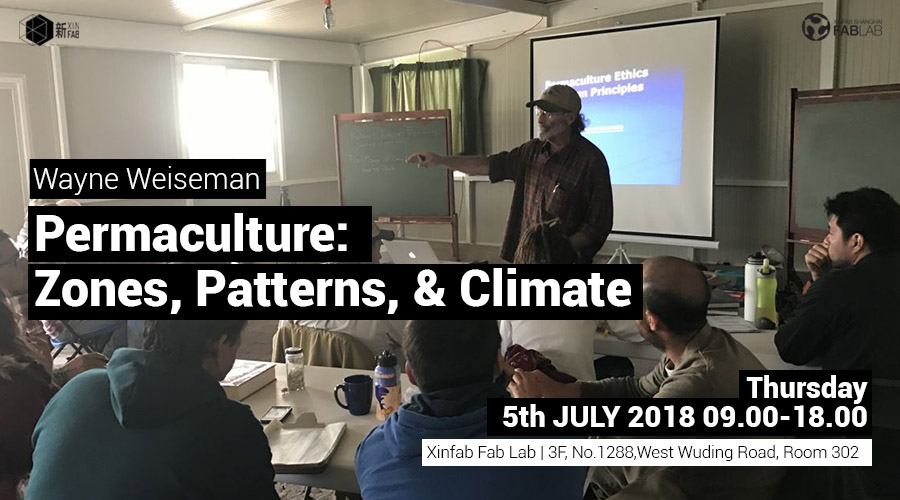
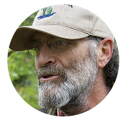

WORKSHOP
[05.07.2018] Permaculture: Zones, Patterns and Climate

***Workshop in English only***
When: July 5th 2 sessions (Morning Session 09.00-12.00/ Afternoon Session 13.00-18.00)
Where: X Xinfab - Wuding West Rd. 1288, Room 302, DoArt Space, Jing'an District | Xinfab-静安区武定西路1288号302,DoArt Space
Price: Morning Session-300RMB / Afternoon Session-600RMB
Join the Open session: "Permaculture: Zones, Patterns & Climate" from the series of workshops from Wayne Weiseman and Rainbow of Hope this 5th of July.
The session is divided into morning and afternoon session (from 09.00-18.00). You can join both sessions or one of them.
Morning Session 09:00 ~ 12:00
This course focuses on the analytical mainstays of Permaculture design and their significance in the context of Permaculture design principles.
-The Zone System
-Design components, and Scales of Permanence
-Sector Analysis
-Observation and Pattern Understanding
Afternoon Session 13:00 ~ 18:00
This course gets a bit more technical but also shares the inspiring insights of projects that have helped to heal the planet and its scars. You should leave with a keen awareness that environmental and ecological problems can be simple to fix with a little understanding and the will to do the work.
-Climate and Micro-climate
-Effect of climate on appropriate design decisions and farming methods
-Greening the Desert, and other short videos
-Plants, Trees, and their Energy Transactions
Save your spot as we have limited spaces!
///////////////////////////////////
HOW TO SIGN UP
SIGN UP DEADLINE: WEDNESDAY, JULY 4
// ALIPAY (300RMB or 600RMB or 900RMB):
transfer the workshop fee to pay@xinfab.com (please indicate your phone number on the payment details so we can contact you!)
// WECHAT (300RMB or 600RMB)
Enter our shop with your phone via this link and proceed to payment with Wechat Wallet
Questions? Send an email to info@xinfab.com.
///////////////////////////////////
ABOUT THE TEACHER

Wayne Weiseman is a Permaculture teacher, curriculum developer, designer, consultant and author. He further embodies the broad scope of Permaculture as an outdoorsman, craftsman, medicine man, natural historian, and father. With an educational background of Landscape Architecture, Wayne is also studied in Feng Shui, and Biodynamic Farming.
Wayne has taught hundreds of Permaculture Design Courses around the world. He has served as a consultant and lecturer to educators, school administrators, business leaders, and others internationally. For 15 years Wayne managed a land-based, self-reliant community project combining organic crop and food production, ecologically-built shelter, renewable energy and appropriate technologies.
Wayne is a co-author of the authoritative book on plant guilds, Integrated Forest Gardening: The Complete Guide to Polycultures and Plant Guilds in Permaculture Systems and is working on another book in 2018.
///////////////////////////////////
参加7月5日韦恩韦斯曼和希望之虹系列讲习班的公开课：“永续栽培：区域，模式和气候”。
会议分为上午和下午（从09.00-18.00）
您可以加入两个会话或其中之一。
///////////////////////////////////
研讨会日程安排
上午会议 09:00〜12:00 - 学费300元人民币
本课程侧重于永续农业设计的分析主线及其在永续栽培设计原则中的意义。
-区域系统
-设计组件，以及永久规模
-部门分析
-观察与模式理解
下午会议 13:00〜18:00 - 学费600元人民币
-气候和微气候
-气候对适当的设计决策和耕作方法的影响
-绿化沙漠和其他短片
-植物，树木及其能源交易
因为我们有限的空间保存你的位置！
///////////////////////////////////
如何注册（截止日期为7月5日星期三）：
_ALIPAY（300RMB或600RMB或900RMB）：将研讨会费用转至pay@xinfab.com（请在付款明细上注明您的姓名和电话号码，以便我们与您联系！）
_WECHAT (300RMB或600RMB):通过此链接与您的手机进入我们的商店，然后继续使用微信钱包进行付款
///////////////////////////////////
关于Wayne Weiseman
Wayne Weiseman是永续教育教师，课程开发人员，设计师，顾问和作者。他进一步体现了作为户外活动家，工匠，医学家，自然历史学家和父亲的永续文化的广泛范围。凭借风景园林的教育背景，Wayne也在风水和生物动力农业方面进行过研究。
韦恩在世界各地教授了数百个永续文化设计课程。他曾担任过教育工作者，学校行政人员，商业领袖和其他国际人士的顾问和讲师。 15年来，Wayne开展了一项基于土地的，自力更生的社区项目，将有机作物和食品生产，生态住所，可再生能源和适当技术相结合。
Wayne是植物行业协会权威书籍的合着者之一，“综合森林园艺：永续栽培系统中的复合栽培和植物协会指南”，并正在编写2018年的另一本书。